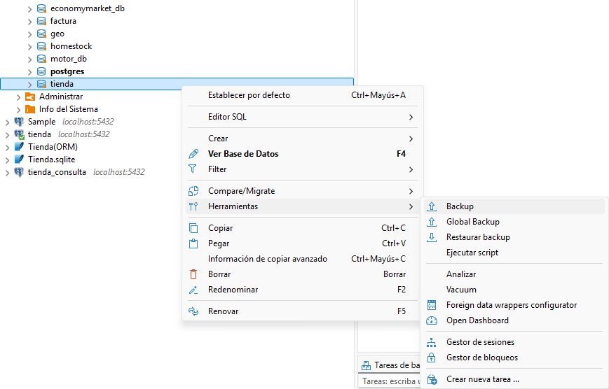
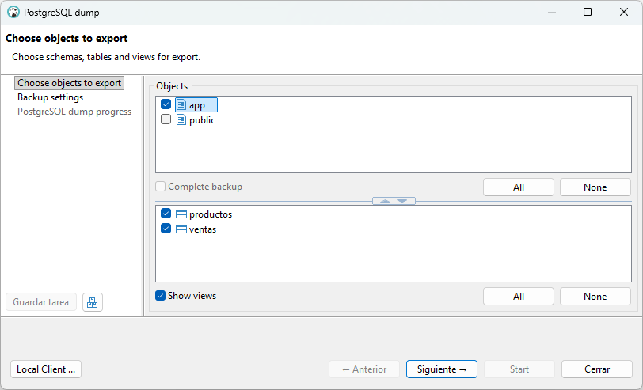
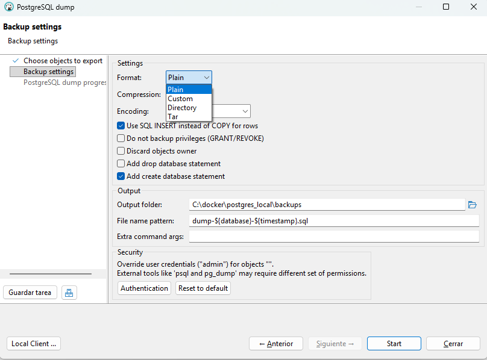
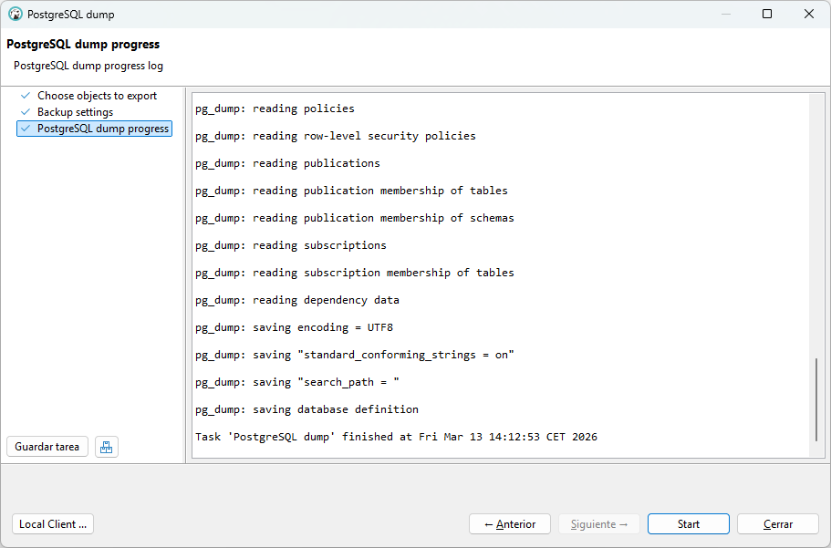
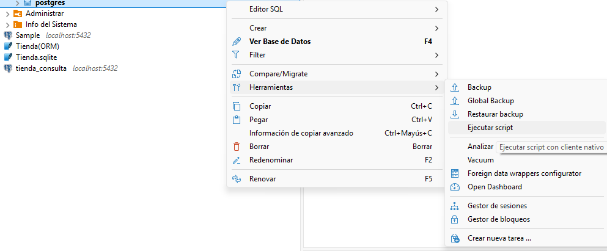
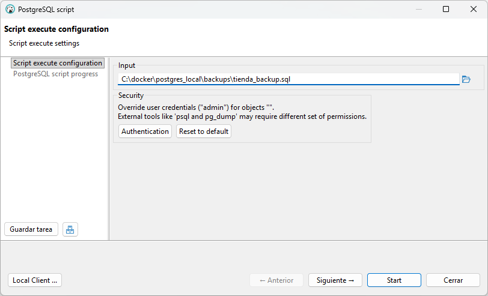
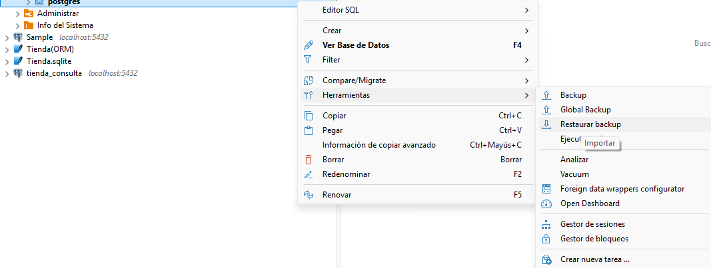
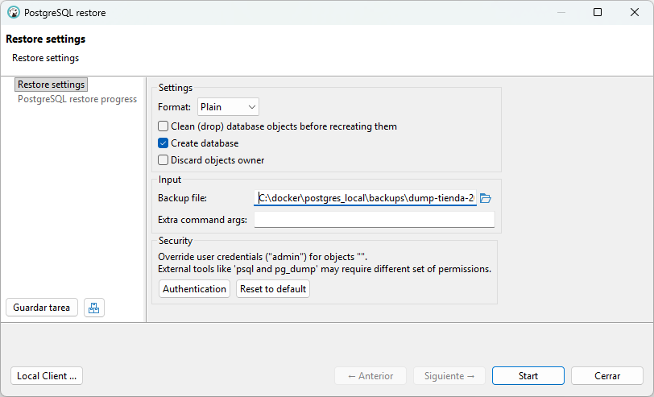

3. Seguridad de los datos y copias de seguridad en PostgreSQL
1. Introducción
Las bases de datos almacenan información crítica para las organizaciones.
Por este motivo es imprescindible implementar mecanismos que permitan proteger los datos y recuperarlos en caso de fallo del sistema, errores humanos o pérdida accidental de información.
En esta unidad aprenderemos a realizar copias de seguridad (backups) y a restaurar la información utilizando PostgreSQL.
En el entorno del aula trabajaremos con PostgreSQL ejecutándose en un contenedor Docker y utilizaremos la herramienta gráfica DBeaver para administrar la base de datos.
2. Objetivos de la unidad
- Comprender los principios básicos de seguridad de la información.
- Conocer los diferentes tipos de copias de seguridad.
- Realizar copias de seguridad en PostgreSQL.
- Restaurar bases de datos a partir de un backup.
- Utilizar DBeaver para realizar tareas de administración.
3. Principios de seguridad de la información
La seguridad de los datos en una base de datos se basa en tres principios fundamentales:
- Confidencialidad: Solo los usuarios autorizados deben poder acceder a la información. Se refiere al control de accesos y permisos a la BD.
-
Integridad: Los datos deben mantenerse correctos y consistentes. Se refiere a restricciones, claves primarias y foráneas, y reglas de validación.
-
Disponibilidad: La información debe estar accesible cuando se necesite. Se refiere a backups, recuperación ante fallos, y mantenimiento del sistema. Es la parte que veremos en esta unidad.
4.Copias de seguridad (Backups)
Las copias de seguridad consisten en crear duplicados de la información almacenada en una base de datos con el objetivo de poder recuperarla en caso de pérdida, fallo del sistema, errores humanos o ataques informáticos. Son un elemento fundamental para garantizar la disponibilidad de los datos.
Realizar copias de seguridad de forma periódica permite restaurar la información y continuar con el funcionamiento del sistema sin grandes pérdidas de datos.
Tipos de copias de seguridad
Según la cantidad de datos que se copian
-
Copia completa: Se realiza una copia de toda la base de datos.
-
Copia incremental: Solo guarda los cambios realizados desde la última copia.
-
Copia diferencial: Guarda los cambios realizados desde la última copia completa.
Según el momento en que se realizan
- Copias en frío: Se realizan cuando el servidor de base de datos está detenido. Este método garantiza que los datos no están siendo modificados durante la copia.
- Copias en caliente: Se realizan mientras la base de datos está funcionando.
Según el tipo de información que se copia
-
Copias físicas: Consiste en copiar directamente los archivos internos de la base de datos que PostgreSQL guarda en disco. Este tipo de copia es rápida pero depende del sistema gestor.
-
Copias lógicas: Consiste en exportar los datos en forma de sentencias SQL o archivos de texto. Estas copias son más portables y permiten restaurar datos en otros servidores.
Además, las copias de seguridad también pueden utilizarse para replicar o clonar una base de datos en otro servidor. Para ello se crea el backup en el servidor original, se transfiere el archivo al nuevo servidor y se restaura allí. Este método permite obtener una copia exacta de la base de datos y suele utilizarse para migraciones o para crear entornos de prueba. No obstante, este procedimiento genera una replicación puntual, ya que las bases de datos no se mantienen sincronizadas automáticamente.
5. Recuperación de datos
La recuperación de datos es el proceso mediante el cual se restaura una base de datos a un estado correcto después de que haya ocurrido un fallo o pérdida de información. Este proceso permite volver a disponer de los datos y continuar con el funcionamiento normal del sistema.
La recuperación es un elemento clave para garantizar el principio de disponibilidad, ya que permite minimizar la pérdida de información y reducir el tiempo de inactividad del sistema.
Algunas situaciones en las que se necesita recuperación podrían ser:
- Fallos del sistema o del hardware, como averías en el servidor o en el disco duro.
- Errores humanos, como el borrado accidental de datos o tablas.
- Corrupción de datos, cuando la información almacenada se daña.
- Ataques informáticos o accesos no autorizados que afectan a la base de datos.
Métodos de recuperación
Para recuperar una base de datos normalmente se utilizan copias de seguridad previamente realizadas. Los métodos más comunes son:
-
Restauración completa: Se recupera toda la base de datos a partir de una copia de seguridad completa.
-
Restauración parcial: Se recuperan solo determinados datos, tablas o partes de la base de datos.
-
Recuperación a un punto en el tiempo: Permite restaurar la base de datos a un momento concreto antes de que ocurriera el problema.
Arquitectura de recuperación en PostgreSQL (WAL)
Algunos sistemas de bases de datos, como Postgres, utilizan mecanismos como Write-Ahead Logging (WAL), donde las operaciones se registran en un log antes de aplicarse a los datos. Esto permite recuperar la base de datos en caso de fallo. Si ocurre un fallo del sistema, PostgreSQL puede leer el WAL y reconstruir los datos.
Dónde está y cómo verlo depende del sistema gestor de bases de datos (SGBD) que estés usando. En PostgreSQL, los archivos WAL se guardan dentro del directorio de datos del servidor. Normalmente están en la carpeta pg_wal/.
6. Herramientas para realizar copias de seguridad en PostgreSQL
En PostgreSQL existen diferentes opciones para realizar copias de seguridad, dependiendo de si se quiere copiar una base de datos concreta, todo el servidor o incluso los archivos físicos del sistema. Las herramientas principales que ofrece el sistema permiten realizar copias lógicas o físicas.
Una de las herramientas más utilizadas es pg_dump, que permite crear copias de seguridad de una base de datos específica. Este tipo de copia se denomina copia lógica, ya que exporta la estructura y los datos en forma de sentencias SQL o en formato binario.
Otra opción es pg_dumpall, que permite crear una copia de seguridad de todas las bases de datos del servidor PostgreSQL, incluyendo también los roles, usuarios y permisos.
Por otro lado, PostgreSQL también permite realizar copias físicas del servidor mediante herramientas como pg_basebackup, que copia directamente los archivos del sistema de la base de datos. Este tipo de copia se utiliza principalmente para replicación o recuperación completa del servidor.
En resumen, las principales opciones para realizar copias de seguridad en PostgreSQL son:
| Herramienta | Qué copia | Tipo de copia |
|---|---|---|
pg_dump |
Una base de datos | Lógica |
pg_dumpall |
Todas las bases de datos del servidor | Lógica |
pg_basebackup |
Archivos completos del servidor | Física |
Estas herramientas permiten adaptar el tipo de copia de seguridad a las necesidades del sistema y al tamaño de la base de datos.
Además de poder realizar copias de seguridad de una base de datos completa o de todo el servidor, PostgreSQL también permite crear copias de objetos específicos, como tablas o esquemas. Esto se puede hacer utilizando diferentes opciones del comando pg_dump, como -t para copiar una tabla concreta o -n para copiar un esquema completo. Estas opciones permiten realizar copias más selectivas cuando no es necesario respaldar toda la base de datos.
| Herramienta / opción | Qué copia | Tipo de copia |
|---|---|---|
pg_dump -t tabla |
Una tabla concreta | Lógica |
pg_dump -n esquema |
Un esquema completo | Lógica |
Copias de seguridad con pg_dump
pg_dump es la herramienta principal de PostgreSQL para realizar copias de seguridad lógicas. En nuestro entorno con Docker, pg_dump se ejecuta dentro del contenedor de PostgreSQL.
Formatos de copias de seguridad en PostgreSQL
En PostgreSQL las copias de seguridad pueden generarse principalmente en dos formatos: SQL o dump (formato custom). La elección de uno u otro depende del uso que se quiera dar al backup y de las herramientas que se utilizarán para restaurarlo.
-
El formato SQL genera un archivo de texto que contiene sentencias SQL como CREATE TABLE, INSERT o ALTER. Estas sentencias permiten reconstruir la base de datos ejecutando el archivo con la herramienta psql. Este formato es fácil de leer y editar, por lo que suele utilizarse en entornos de aprendizaje o para bases de datos pequeñas.
-
El formato dump o custom es un formato binario generado normalmente con la opción -Fc de pg_dump. Este tipo de archivo no es legible directamente, pero permite realizar restauraciones más flexibles utilizando la herramienta pg_restore. Entre sus ventajas se encuentran la posibilidad de restaurar solo ciertos objetos de la base de datos o realizar restauraciones en paralelo, lo que resulta especialmente útil en bases de datos de mayor tamaño.
En resumen, el formato SQL es más simple y legible, mientras que el formato dump ofrece mayor flexibilidad y eficiencia durante la restauración.
En los siguientes ejemplos aprenderemos a utilizar ambas herramientas para realizar copias de seguridad. Trabajaremos con la base de datos tienda, que hemos creado en esta unidad, y sobre ella realizaremos las copias de seguridad.
Antes de empezar, crearemos una carpeta donde guardaremos los archivos de backup. Esto nos permitirá tener los datos organizados y localizarlos fácilmente.
postgres_local/
│
├─ docker-compose.yml
└─ backups/
Ejemplo 1: Copia de seguridad en formato SQL:
docker compose exec -T postgres pg_dump -U admin -C tienda > backups/tienda_backup.sql
| Parte | Función |
|---|---|
| docker compose exec postgres | Ejecuta un comando dentro del contenedor |
| pg_dump | Herramienta que crea una copia de seguridad de una base de datos |
| -T | Evita problemas de codificación |
| -U admin | Indica el usuario de PostgreSQL con el que se realiza la conexión |
| -C | Incluye en el archivo de backup la instrucción CREATE DATABASE |
| tienda | Nombre de la base de datos que se quiere copiar |
| > | Redirige la salida del comando a un archivo |
| tienda_backup.sql | Archivo donde se guarda el backup en formato SQL |
Ejemplo 2: Copia de seguridad en formato dump (binario):
Cuando se trabaja con PostgreSQL dentro de un contenedor Docker y se utiliza PowerShell en Windows, pueden aparecer problemas al manejar archivos de backup binarios (formato custom) usando redirecciones (>, <) o pipes. Esto ocurre porque PowerShell puede modificar el flujo de datos binarios.
Para evitar estos problemas, la forma más fiable es crear el backup dentro del contenedor y copiarlo después al sistema anfitrión, y hacer lo mismo en el proceso de restauración.
Primero se genera el backup dentro del contenedor usando pg_dump en formato custom:
docker compose exec -T postgres pg_dump -U admin -Fc -C tienda -f /tmp/dump_tienda.dump
Después se copia el archivo desde el contenedor a la carpeta backups del sistema anfitrión:
docker cp postgres:/tmp/dump-tienda.dump backups/dump-tienda.dump
| Parte | Función |
|---|---|
| docker compose exec postgres | Ejecuta un comando dentro del contenedor |
| pg_dump | Herramienta que crea una copia de seguridad de una base de datos |
| -T | Evita problemas de codificación |
| -U admin | Indica el usuario de PostgreSQL con el que se realiza la conexión |
| -Fc | Genera el backup en formato custom (binario) compatible con pg_restore |
| -C | Incluye en el backup la instrucción CREATE DATABASE |
| tienda | Nombre de la base de datos que se quiere copiar |
| -f | Permite indicar el archivo donde se guardará el backup |
| /tmp/dump-tienda.dump | Ruta dentro del contenedor donde se guarda el archivo de backup |
7. Herramientas para restaurar una copia de seguridad en PostgreSQL
En PostgreSQL existen diferentes herramientas para restaurar copias de seguridad, dependiendo del formato del backup:
-
Backup en formato SQL (.sql): Se restaura ejecutando el archivo con la herramienta psql
-
Backup en formato binario o personalizado (.backup, .dump): Se restaura con la herramienta pg_restore
Al restaurar una copia de seguridad en PostgreSQL, en algunos casos, el archivo de backup incluye la sentencia CREATE DATABASE, que crea automáticamente la base de datos durante la restauración. Por el contrario, si el archivo de backup no contiene la sentencia de creación de la base de datos, entonces es necesario crear la base de datos manualmente antes de restaurar el backup. Una vez creada, se ejecuta la restauración indicando esa base de datos como destino para que se creen las tablas, datos y demás objetos.
Para crear una base de datos a partir de otra existente desde Docker Compose, debes ejecutar el comando SQL usando psql dentro del contenedor:
docker compose exec postgres psql -U admin -d postgres -c "CREATE DATABASE nueva_bd;"
En los siguientes ejemplos aprenderemos a utilizar ambas herramientas para restaurar la base de datos tienda, de la que ya hemos hecho la copia de seguridad en los ejemplos anteriores.
Ejemplo 3: Restauración con psql
En Linux:
docker compose exec -T postgres psql -U admin -d postgres < backups/tienda_backup.sql
En Windows:
type backups/tienda_backup.sql | docker compose exec -T postgres psql -U admin -d postgres
Ejemplo 4: Restauración con pg_restore
Primero se copia el archivo desde el contenedor a la carpeta backups del sistema anfitrión:
docker cp postgres:/tmp/dump-tienda.dump backups/dump-tienda.dump
Después se restaura la BD desde la carpeta de backups usando pg_restore:
docker compose exec postgres pg_restore -U admin -C -d postgres /tmp/dump_tienda.dump
La opción -C permite que el proceso cree la base de datos tienda automáticamente antes de restaurar su contenido.
8. Copias de seguridad con DBeaver
Cuando se realizan copias de seguridad o restauraciones desde DBeaver, en realidad el programa no implementa su propio sistema de backup. Internamente utiliza las herramientas oficiales de PostgreSQL, como pg_dump, psql y pg_restore.
DBeaver simplemente proporciona una interfaz gráfica que facilita el uso de estas herramientas sin tener que escribir los comandos manualmente.
Dependiendo de la operación que se realice desde la interfaz, DBeaver ejecutará una u otra herramienta por debajo.
| Opción en DBeaver | Herramienta utilizada | Función |
|---|---|---|
| Tools → Backup (SQL o dump) | pg_dump |
Crear copias de seguridad en formato SQL (plain) o custom o binario (.dump) |
| Tools → Restore (dump) | pg_restore |
Restaurar copias en formato custom o binario |
| Execute Script | psql |
Restaurar copias en formato SQL ejecutando el script |
Hacer una copia de seguridad en DBeaver:
| 1. Clic derecho, Tools → Backup | 2. Seleccionar los objetos |
|---|---|
 |
 |
| 3. Elegir el formato de exportación | 4. Guardar backup |
 |
 |
Restaurar una copia de seguridad en DBeaver:
- Si el archivo de backup es en formato SQL
| 1. Clic derecho, Tools → Ejecutar Script | 2. Seleccionar el archivo .sql |
|---|---|
 |
 |
- Si el archivo de backup es en formato dump
| 1. Clic derecho, Tools → Restore | 2. Seleccionar el archivo .dmp |
|---|---|
 |
 |